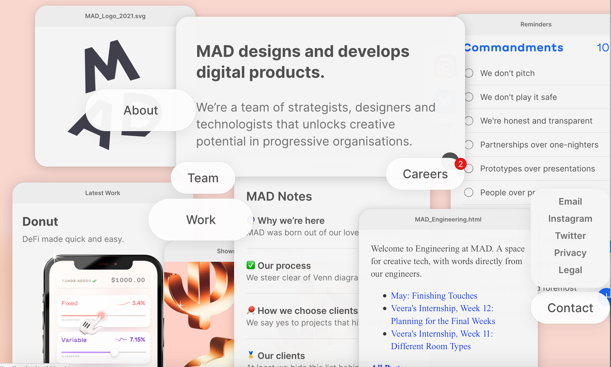
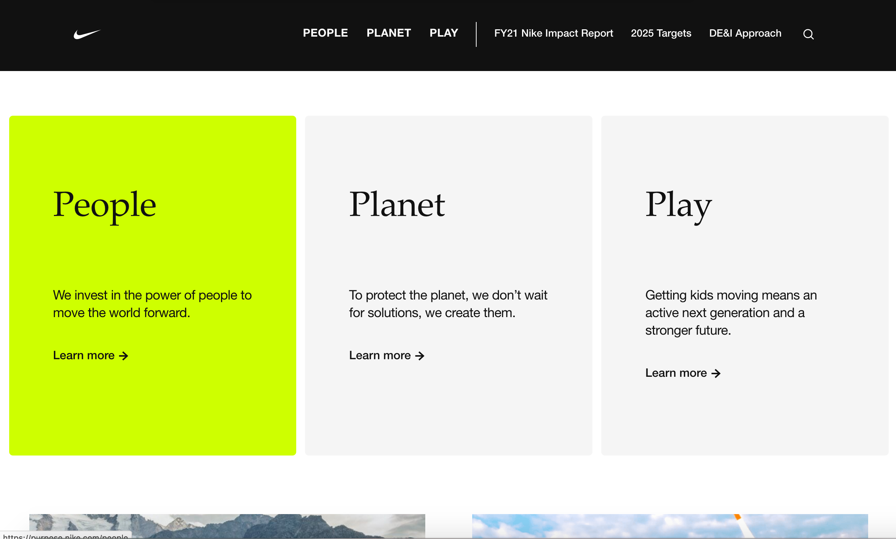
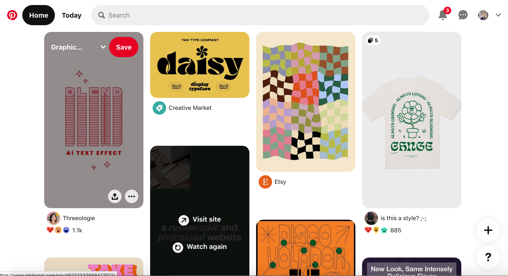

- Repetition
Repetition
My sample for repetition is a unique website that uses interactive boxes to create engagement among its users.
- Although the boxes are different positions and sizes
- The repetition of the many boxes creates a sense of order amongst the chaos
- The boxes themselves
- All have rounded edges and are the same shape in different sizes which also unifies the page
Sample photo: 
Website link: Visit Mad
- Alignment
I enjoyed this website that displays the work of Yusuke Fukunaga which utilizes paralax effect and infinite scroll.
- This website takes uses an organized grid layout to showcase the work of Yusuke Fukunaga
- the use of the grid layout allows the viewer to see what a large portfolio the creator of the website has.
Sample photo: 
Website link: Visit Yusuke Fukunaga
I chose a sample from Nike for proximity
- I thought proximity was one of the harder elements to show demonstratively
- The grouping of these boxes show attention to proximity of like content
- this website also demonstrates good examples of contrast (green accent coor on active button), repetition (P in People, Planet, Play) and alugnment of the boxes
Sample photo: 
Website link: Visit Nike
- Contrast
There was a lot of examples to choose from for contrast. I am choosing the example of the Pinterest website for the following reasons:
- The red logo provides a powerful contrast to the white background
- This accent color is used sparingly but also shows up in the red "save" button
Sample photo: 
Website link: Visit Pinterest